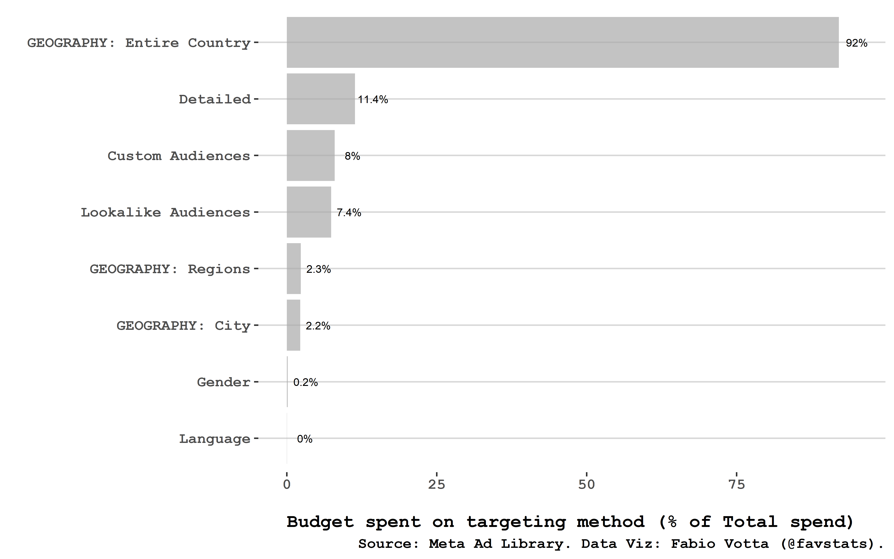
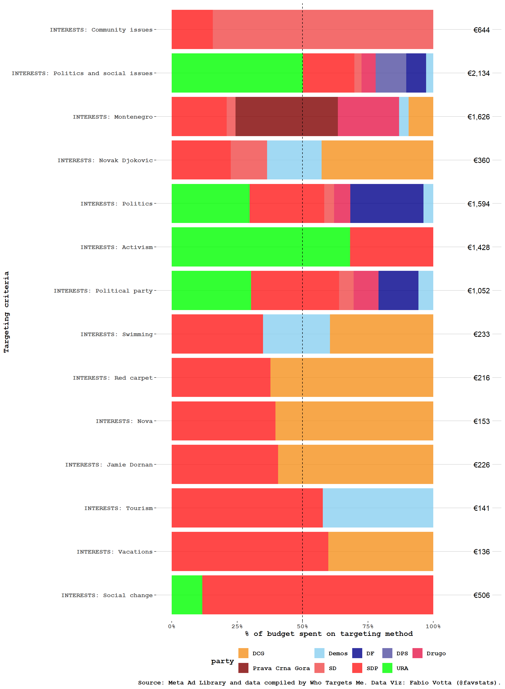
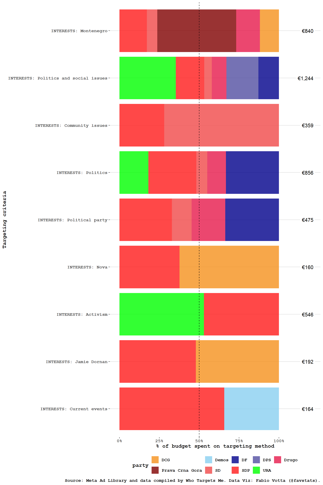
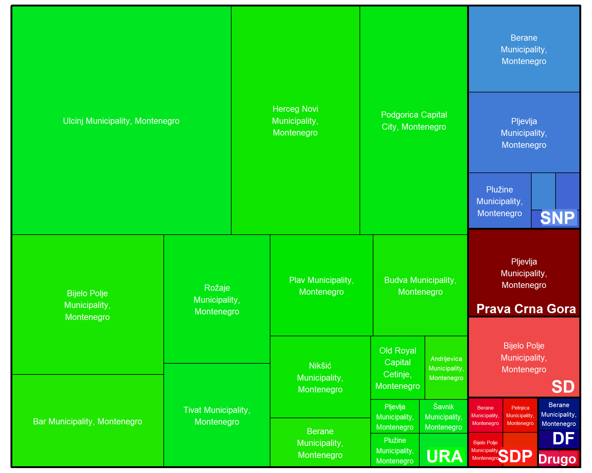
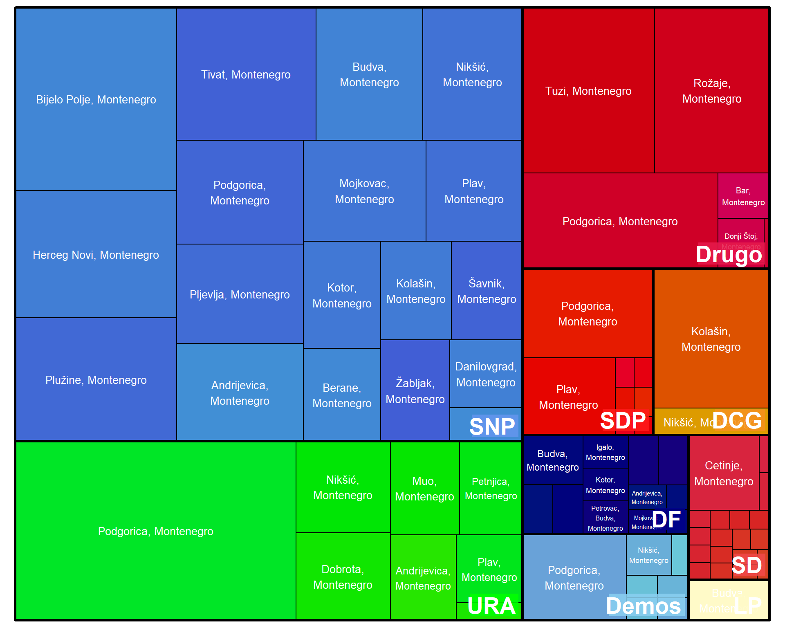
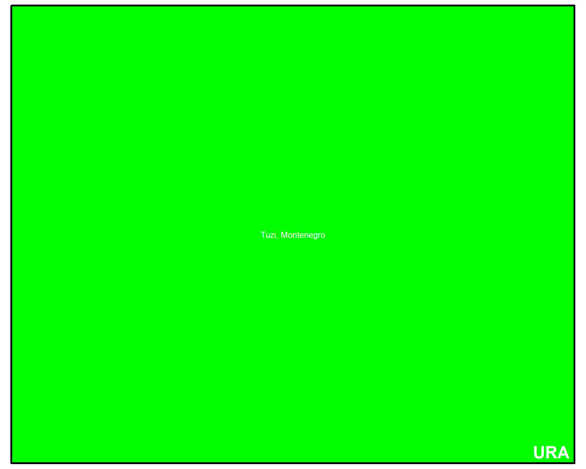
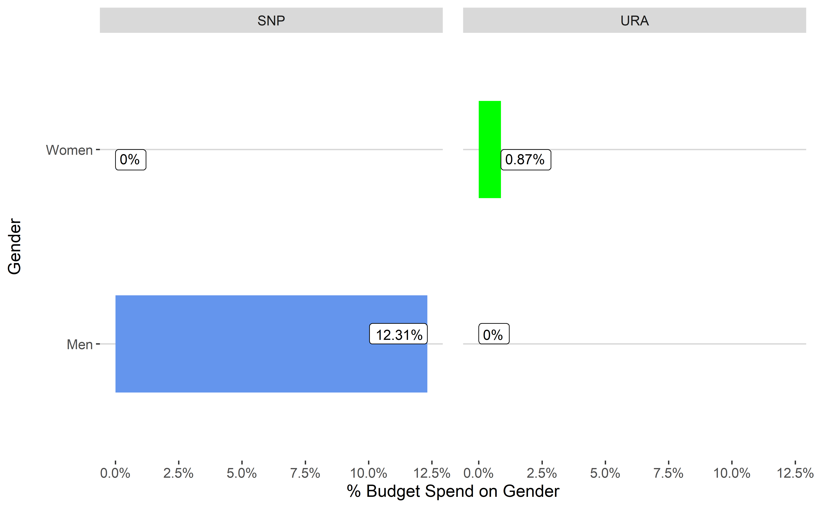
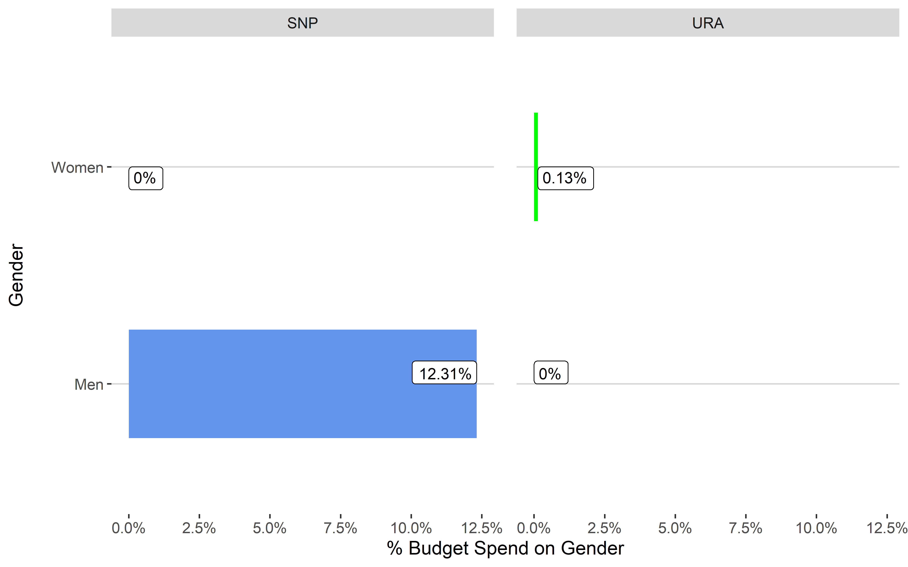
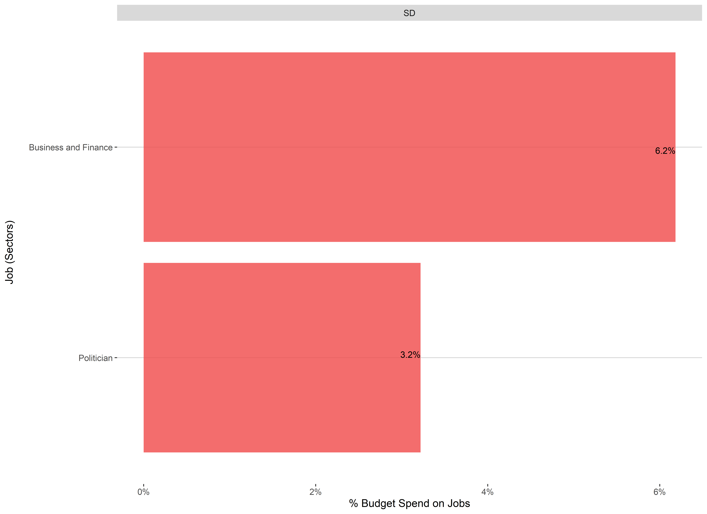

Targeting
This section shows spening per targeting criteria used by political parties to reach citizens in the run-up to the 2023 Montenegrin parliamentary election for the latest available data.
Spending per Targeting Criteria

NULLTop Targeted (Detailed) Audiences


Top Contested Audiences


Geographical Targeting
Regions

Cities

Geographical Exclusion
Cities

Age Targeting


Gender Targeting


Education Targeting
Job Targeting
